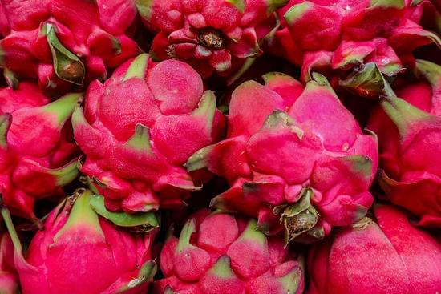
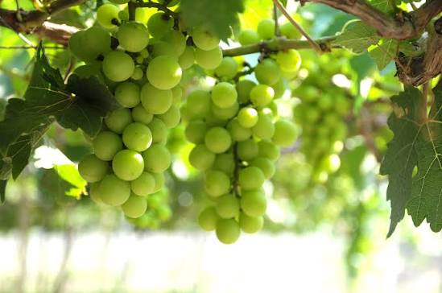

Selamat datang di halaman utama kami, silahkan jelajahi situs kami!

Buah naga adalah buah dari beberapa jenis kaktus dari genus Stenocereus dan Selenicereus. Buah ini berasal dari Meksiko, Amerika Tengah dan Amerika Selatan tetapi sekarang juga dibudidayakan di negara-negara Asia seperti Taiwan, Vietnam, Filipina, Indonesia dan Malaysia

Anggur hijau adalah varietas anggur yang memiliki warna kulit hijau. Buah ini biasanya memiliki rasa yang lebih asam dan aroma yang khas. Anggur hijau sering digunakan untuk membuat anggur putih dan juga bisa dimakan segar.